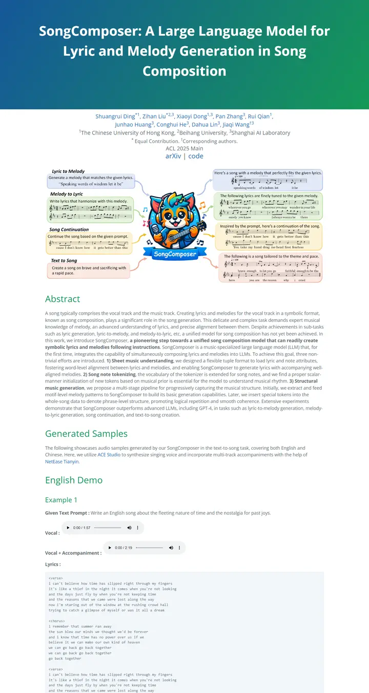
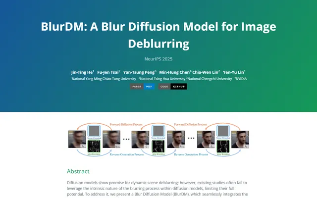

SongComposer: A Large Language Model for Lyric and Melody Generation in Song Composition
GitHub Pages の歌本。青から緑へのバナーがタイトルを歌い上げ、ギターを抱えたキツネのイラストがタスクを説明し、その下の例はどれもプロンプト、2つのプレーヤー、枠で囲んだ歌詞カードの組み合わせ。

表示されたページと照合済みです。
選んだ理由
青から緑へのグラデーションのタイトル帯と緑のセクション見出しが、一貫した色のアイデンティティを生んでいます。タスクカードを添えたマスコットのイラストのティーザーは愛らしく、枠組みも明快です。歌詞ブロックは長めですが、きちんと枠に収まっています。
以下の説明と DESIGN.md 本文は英語です。コーディングエージェントが同じ一つの版を読めるよう、翻訳していません。
概要
カラーパレット
タイポグラフィ
Open Sans 400/700
SongComposer: A Large Language Model for Lyric and Melody Generation i
Abstract · Method · Results · BibTeX — 0123456789
Consolas
SongComposer: A Large Language Model for Lyric and Melody Generation i
Abstract · Method · Results · BibTeX — 0123456789
余白と形
ページの構成要素
ガイドライン
似たスタイル

BlurDM: A Blur Diffusion Model for Image Deblurring
よそ行きの装いをした GitHub README。題字には青から緑への空が広がり、白い文字、その下には飾らない緑の見出し。

CRAFT: Training-Free Cascaded Retrieval for Tabular QA
淡い青焼きブルーの整った製品マニュアル。どの段階もそれぞれの色の縁をまとっている。

Efficient Self-Evaluation for Diffusion Language Models via Sequence Regeneration
青、すみれ、アプリコットの夜明け色に染まった角丸カードの整った積み重ね。署名はグラデーションのワードマーク。

FIGMA: Towards FIne-Grained Music retrievAl
温かみのある紙に刷った音楽誌。赤いキッカーの下に重厚な Newsreader の見出し、結果を示す大きな赤いセリフ数字、柔らかなクリーム色の枠に収まった図。

GuideDog: A Real-World Egocentric Multimodal Dataset for Blind and Low-Vision Accessibility-Aware Guidance
静かな学術書の一頁。セリフ体の一段組み、リンクには牛血色のインク、自分の行だけをほんのり染める表。

LaMI: Augmenting Large Language Models via Late Multi-Image Fusion
丁寧に作られた学会配布資料。Noto Serif の見出し、ネイビーの枠線ボタン、交互に現れる柔らかなグレーの帯。